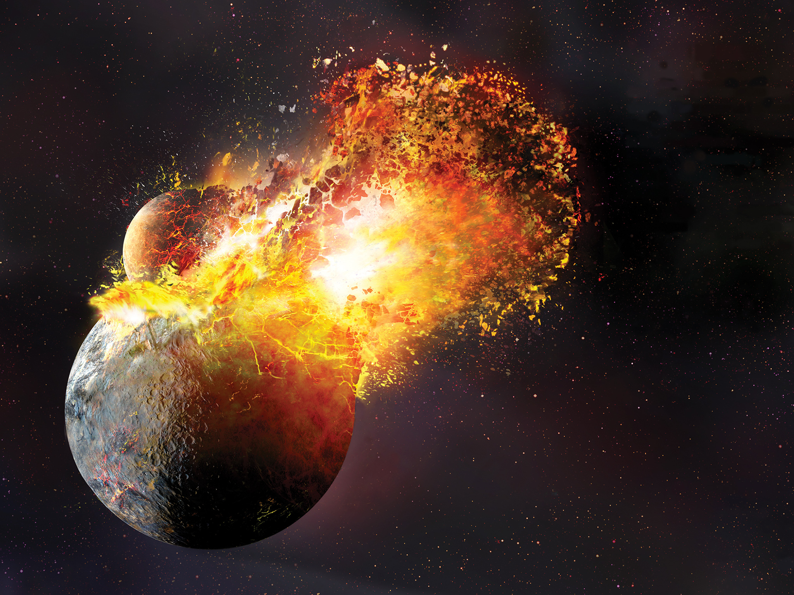
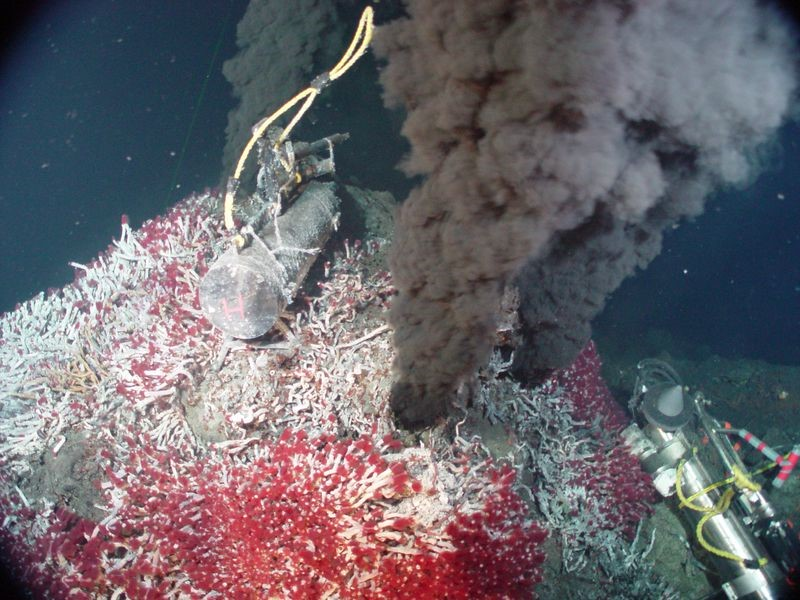

How Earth and Europa’s Geological History infers projections of Europa’s
-3.8 BYA – 4.1 BYA Earth and Europa were reformed by showers of Meteors, asteroids, and comets.
Europa was most likely bombarded as well
-which could have led to the oceanic
layers
-single-celled organisms appeared 300 MY after
-eubacteria and archaebacteria

-By now we have carbon, water, free energy source to
replace photosynthesis, and a habitable zone
-Methanogenesis
-Methanotrophs oxidize CH4 to HCHO
and the Hyphomicrobium bacterium eats HCHO so we can see a codependent evolutionary relationship.

ENDOLITHS
Endoliths are organisms like lichen, algae, fungus, and amoeba’s.
They are classified as extremophiles, however, the
hyperthermophile is what most likely exists
Radioresistant. Produce organic compounds from inorganic matter
If too salty only Halophiles would exist
Why is studying Europa’s geology important?
According to Steven Hawking, humans have less than 100 years to colonize a new world, or drastically change ours
We can make geological inferences on what type of organisms could live there
We can study ancient life like archaebacteria and use them to reverse climate change on Earth
From the geological findings, and history of Europa we can see how the creation of life could very well be a geothermal-chemical process whereby ionizing water at suitable temperatures with tides, a correct PH level, a good rock cycle, and the right amount of gravity could produce a derivative of an Endolith
By understanding that Endoliths act as metabolizers converting compounds, one could correlate the hypothesis that Eukaryotic cells formed from archeabacteria prokaryotes which acted as organelles combined inside other bigger prokaryotes
Also, based off of the geology of Europa humans aren’t technologically advanced enough to explore 150 miles below, not to mention the ship would have to be radiation proof along with its equipment
Lastly, I think lead coated submersible rovers that were A.I. driven could explore the ocean at a different linae where there is a gap in the ice
Without, understanding geology NASA couldn’t plan the missions that could be saving the human race